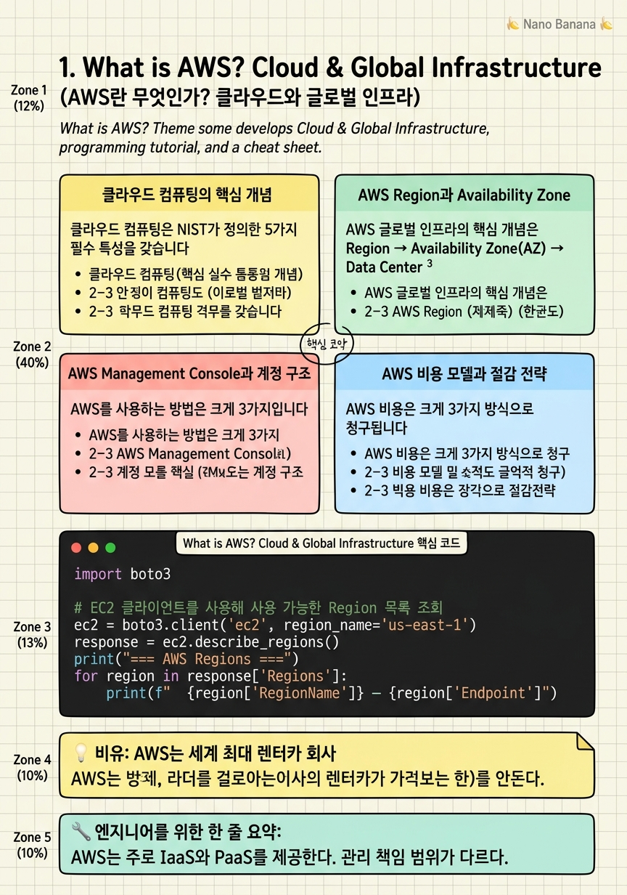

What is AWS? Cloud & Global Infrastructure

🎯 학습 목표
- 온프레미스 vs 클라우드의 차이를 설명할 수 있다
- AWS Region, Availability Zone, Edge Location의 차이를 구분할 수 있다
- AWS Management Console에서 서비스를 찾고 Region을 전환할 수 있다
- Free Tier와 Pay-as-you-go 비용 모델을 이해한다
- 클라우드의 5가지 핵심 특성(탄력성·확장성·고가용성·내결함성·비용 효율)을 설명할 수 있다
AWS(Amazon Web Services)는 2006년 Amazon이 출시한 클라우드 플랫폼으로, 오늘날 전 세계 클라우드 인프라의 약 30%를 점유하는 가장 큰 퍼블릭 클라우드 사업자입니다. 우리가 YouTube에서 영상을 보거나 Netflix에서 드라마를 스트리밍하거나 Airbnb에서 숙소를 예약할 때, 그 뒤에서 서버와 데이터베이스와 네트워크를 묵묵히 돌리고 있는 것이 바로 AWS입니다.
'클라우드 컴퓨팅'이란 내 컴퓨터나 사무실 서버에 모든 것을 설치하는 대신, 인터넷을 통해 다른 곳에 있는 컴퓨터·저장소·네트워크를 빌려 사용하는 방식입니다. 예전에는 서비스를 출시하려면 서버를 구매하고, 데이터센터 공간을 임차하고, 냉각 장치를 설치하고, 네트워크를 구성하는 데 수개월과 수천만 원이 필요했습니다. 지금은 신용카드 한 장으로 5분 만에 전 세계 어디서든 서버를 띄울 수 있습니다.
이 챕터에서는 AWS의 물리적 기반인 글로벌 인프라를 먼저 이해합니다. AWS 서비스가 실제로 어디에, 어떤 구조로 배치되어 있는지 알아야 나중에 가용성·성능·비용을 고려한 아키텍처를 설계할 수 있기 때문입니다.
핵심 내용
클라우드 컴퓨팅의 핵심 개념
클라우드 컴퓨팅은 NIST가 정의한 5가지 필수 특성을 갖습니다. 첫째, On-demand self-service — 담당자에게 요청하거나 결재를 기다리지 않고도 필요한 순간 즉시 자원을 프로비저닝합니다. 둘째, Broad network access — 인터넷이 연결된 곳이라면 어디서든 접근 가능합니다. 셋째, Resource pooling — 수천 명의 고객이 같은 물리 서버를 공유하면서도 서로 격리됩니다. 넷째, Rapid elasticity — 트래픽이 급증하면 서버를 자동으로 늘리고, 줄어들면 다시 줄입니다. 다섯째, Measured service — 사용한 만큼만 정확히 청구됩니다.
클라우드 서비스 모델은 3가지로 나뉩니다.
| 모델 | 사용자가 관리하는 것 | 예시 |
|---|---|---|
| IaaS (Infrastructure) | OS, 런타임, 앱, 데이터 | EC2, S3 |
| PaaS (Platform) | 앱, 데이터 | Elastic Beanstalk, RDS |
| SaaS (Software) | 설정만 | Gmail, Slack |
AWS는 주로 IaaS와 PaaS를 제공하는 플랫폼입니다. 대부분의 AWS 서비스는 '관리형(Managed)' 서비스로, 운영 체제 패치·하드웨어 교체·이중화 설정 같은 운영 부담을 AWS가 대신 맡아줍니다.
온프레미스(On-Premises)와 비교할 때 클라우드의 가장 큰 장점은 선행 투자(Capital Expenditure) → 운영 비용(Operational Expenditure) 전환입니다. 서버를 소유하지 않아도 되기 때문에 스타트업이나 초기 제품의 리스크가 크게 줄어듭니다.
AWS Region과 Availability Zone
AWS 글로벌 인프라의 핵심 개념은 Region → Availability Zone(AZ) → Data Center 3계층 구조입니다.
Region은 지리적으로 분리된 독립적인 AWS 클러스터입니다. 예를 들어 ap-northeast-2는 서울 리전이고, us-east-1은 미국 버지니아 북부 리전입니다. 현재 AWS는 전 세계 30개 이상의 리전을 운영 중이며, 서로 다른 리전의 데이터는 원칙적으로 서로 이동하지 않습니다(데이터 주권 보장).
Availability Zone(AZ)은 같은 리전 안의 독립적인 데이터센터 그룹입니다. 서울 리전은 현재 4개의 AZ(ap-northeast-2a, 2b, 2c, 2d)를 가지고 있습니다. 각 AZ는 물리적으로 수십 km 떨어져 있고 별도의 전력·냉각·네트워크를 사용하므로, 한 AZ에 화재가 나거나 정전이 발생해도 다른 AZ는 영향을 받지 않습니다. AZ 간 네트워크는 저지연 전용 광케이블로 연결되어 있습니다.
Edge Location(엣지 로케이션)은 CloudFront(CDN)가 콘텐츠를 캐싱하는 장소로, 리전보다 훨씬 많은 400개 이상 지점에 존재합니다. 서울 사용자가 미국 S3에서 이미지를 요청할 때 서울 엣지 로케이션이 캐싱된 버전을 빠르게 제공합니다.
설계 원칙: 고가용성을 위해 중요한 리소스는 반드시 2개 이상의 AZ에 분산 배치합니다. 단일 AZ에만 배치하면 그 AZ가 장애를 겪을 때 서비스가 중단됩니다.
AWS Management Console과 계정 구조
AWS를 사용하는 방법은 크게 3가지입니다.
-
Management Console: 웹 브라우저로 접근하는 GUI. 초보자에게 가장 익숙하지만 자동화가 어렵다.
-
AWS CLI: 터미널에서 명령어로 AWS를 제어. 스크립트 자동화에 적합.
-
SDK (boto3, aws-sdk 등): Python·JavaScript 같은 프로그래밍 언어에서 AWS API를 호출.
계정 구조를 이해하는 것도 중요합니다. AWS 계정에는 모든 권한을 가진 Root User가 있습니다. Root User는 가능하면 일상적인 작업에 사용하지 않고, 대신 IAM User를 만들어 사용하는 것이 보안 모범 사례입니다(다음 챕터에서 자세히 다룹니다).
콘솔 우측 상단에서 Region을 전환할 수 있습니다. 서비스를 만들 때는 항상 어느 리전에 만들고 있는지 확인하세요. EC2 인스턴스를 서울 리전에 만들었는데 버지니아 리전을 보고 있으면 목록에 나타나지 않습니다.
AWS Free Tier는 신규 가입자에게 12개월간 특정 서비스를 무료로 제공합니다. 예를 들어 EC2 t2.micro 750시간/월, S3 5GB, RDS db.t2.micro 750시간/월 등이 포함됩니다. 단, Free Tier 한도를 초과하면 비용이 청구되므로 Cost Explorer와 Budget Alerts를 반드시 설정하세요.
AWS 비용 모델과 절감 전략
AWS 비용은 크게 3가지 방식으로 청구됩니다.
Compute (컴퓨팅): EC2, Lambda, Fargate 등 서버 실행 비용. EC2는 시간 단위(초 단위 청구), Lambda는 요청 수 + 실행 시간으로 청구됩니다.
Storage (저장소): S3, EBS, RDS 스토리지는 GB·월 단위로 청구됩니다. 저장하는 양과 스토리지 클래스(Standard, Glacier 등)에 따라 단가가 다릅니다.
Data Transfer (데이터 전송): AWS로 들어오는 트래픽(Inbound)은 무료이지만, AWS에서 나가는 트래픽(Outbound)은 GB 단위로 청구됩니다. 같은 리전 내 서비스 간 트래픽은 대부분 무료이거나 매우 저렴합니다.
비용을 줄이는 주요 전략:
- Reserved Instances (RI): 1년 또는 3년 약정 시 On-Demand 대비 최대 72% 할인
- Spot Instances: AWS의 유휴 용량을 경매 방식으로 사용. 최대 90% 할인이지만 갑자기 종료될 수 있음
- Savings Plans: 특정 사용량을 약정하는 더 유연한 할인 방식
- Auto Scaling: 사용하지 않을 때 서버를 자동으로 줄여 낭비를 방지
초보자가 AWS 비용 폭탄을 피하는 가장 중요한 습관: 실습 후 사용하지 않는 리소스는 즉시 삭제하고, AWS Budgets에서 월 예산 한도 알림을 설정하세요.
💡 비유로 이해하기
AWS를 이해하는 가장 쉬운 비유는 렌터카 회사입니다. 자동차(서버)를 직접 구매하면 선불로 큰 돈을 지불해야 하고, 고장나면 직접 수리해야 하며, 많이 써도 적게 써도 같은 고정비가 나갑니다.
렌터카 회사(AWS)에서는 필요할 때마다 원하는 크기의 차를 빌릴 수 있습니다. 소형차(t3.micro)는 저렴하고, SUV(m5.4xlarge)는 비쌉니다. 장거리 여행(Reserved)은 미리 예약하면 할인이 되고, 급하게 짧게 쓸 때(On-Demand)는 그때그때 빌립니다. 심야 할인(Spot)도 있습니다.
Region과 AZ는 렌터카 회사의 전국 지점망입니다. 서울 지점(서울 Region)에서 빌린 차는 서울 지점에 반납해야 합니다. 각 지점 안에는 여러 주차장(AZ)이 있고, 한 주차장에 화재가 나도 다른 주차장의 차는 안전합니다. Edge Location은 고속도로 휴게소처럼 자주 찾는 물건(콘텐츠)을 미리 가져다 놓는 곳입니다.
💻 코드 예시
boto3는 AWS를 Python으로 제어하는 공식 SDK입니다. 아래 예제는 현재 사용 가능한 AWS 리전 목록을 조회하고, S3 버킷 목록을 가져오는 기본 사용법을 보여줍니다. 처음 실행하기 전에 pip install boto3와 aws configure 설정이 필요합니다.
import boto3
# EC2 클라이언트를 사용해 사용 가능한 Region 목록 조회
ec2 = boto3.client('ec2', region_name='us-east-1')
response = ec2.describe_regions()
print("=== AWS Regions ===")
for region in response['Regions']:
print(f" {region['RegionName']} — {region['Endpoint']}")
# S3 클라이언트 — 글로벌 서비스라 region_name 불필요
s3 = boto3.client('s3')
buckets = s3.list_buckets()
print("\n=== My S3 Buckets ===")
for bucket in buckets.get('Buckets', []):
print(f" {bucket['Name']} (created: {bucket['CreationDate']})")
# 현재 계정 ID 확인
sts = boto3.client('sts')
identity = sts.get_caller_identity()
print(f"\nAccount ID: {identity['Account']}")
print(f"ARN: {identity['Arn']}")boto3.client('ec2', region_name='us-east-1')처럼 서비스 이름과 리전을 지정해 클라이언트를 만듭니다. S3는 글로벌 서비스이므로 리전 지정이 불필요합니다. sts.get_caller_identity()는 현재 인증된 IAM 사용자 또는 Role의 계정 ID와 ARN(Amazon Resource Name)을 반환합니다. ARN은 AWS에서 모든 리소스를 유일하게 식별하는 형식(arn:aws:iam::123456789012:user/alice)입니다.
🏭 현업에서의 평가
✅ 시니어가 보는 것
- 단순 암기가 아닌 '왜 AZ를 여러 개 쓰는지'를 설명할 수 있는가
- 비용 모델을 이해하고 Reserved vs On-Demand 선택 판단을 내릴 수 있는가
- AWS CLI 또는 SDK로 기본 작업을 자동화할 수 있는가
⚠️ 레드 플래그
- Region과 AZ를 혼동하거나 같은 개념으로 설명함
- 모든 서비스를 On-Demand로 쓰는 것이 최선이라고 생각함
- Root User를 일상적인 작업에 사용함
🎤 예상 인터뷰 질문
- 서울 리전에 EC2를 배포할 때 왜 단일 AZ가 아닌 Multi-AZ를 선택해야 합니까?
- 온프레미스 환경 대비 클라우드의 TCO(총소유비용)를 어떻게 계산하겠습니까?
- AWS에서 예상치 못한 비용이 발생했을 때 가장 먼저 확인할 것은 무엇입니까?
✨ 핵심 요약
IaaS vs PaaS vs SaaS
AWS는 주로 IaaS와 PaaS를 제공한다. 관리 책임 범위가 다르다.
Region > AZ > 데이터센터
3계층 구조. 고가용성 설계의 핵심 단위는 AZ다.
데이터는 리전을 떠나지 않는다
명시적으로 복제하지 않는 한 다른 Region으로 이동하지 않는다.
Pay-as-you-go
사용한 만큼만 청구. Inbound는 무료, Outbound는 유료.
Root User는 금고 열쇠
일상 작업에 Root User를 사용하지 말고 IAM User를 사용한다.
Free Tier 주의
12개월 무료이지만 한도 초과 시 즉시 과금. Budget Alert 설정 필수.
Edge Location은 캐시 서버
CloudFront CDN이 사용하는 400개 이상의 글로벌 캐싱 지점.
자동화가 핵심
콘솔보다 CLI/SDK를 배우면 반복 작업을 자동화할 수 있다.